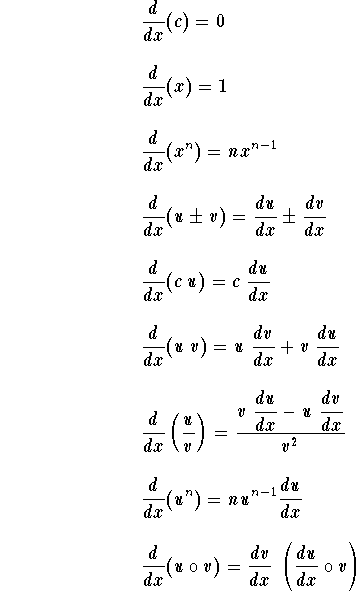

Basic Derivatives 1
In the table below, u,v, and w are functions of the variable x. a, b, c, and n are constants (with some restrictions whenever they apply). ln(x) designate the natural logarithmic function and e the natural base for ln(x). Recall that e = 2.718... .
